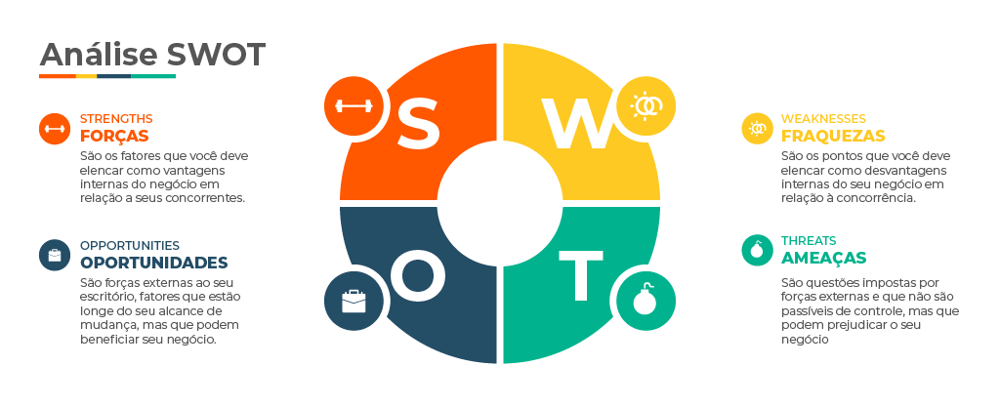

Matriz SWOT
O que é análise SWOT ou FOFA
Análise SWOT, ou FOFA, é uma ferramenta de planejamento estratégicona gestão de projetos, usada para analisar cenários e embasar a tomada de decisões. Ela costuma ser usada pelas empresas antes de implementar algum projeto de impacto para o negócio.
A análise proporciona um diagnóstico completo da situação da própria empresa e dos ambientes que estão no seu entorno, de maneira que ajude a correr menos riscos e aproveitar as oportunidades.
Acredita-se que esse método foi criado na década de 1960 pelo consultor de empresas Albert S. Humphrey, ao integrar um projeto do instituto de pesquisa de Stanford que foi financiado pelas maiores empresas da época. Albert conta essa história neste documento, publicado em 2005, após a sua morte.
É claro que, anos depois da sua criação, a análise SWOT já passou por várias reformulações para se adaptar às necessidades de cada projeto. O método se tornou muito popular, já que é simples e rápido de aplicar e traz resultados efetivos para o planejamento.
Mas afinal, o que significa SWOT? É a sigla formada pelas iniciais das palavras Strengths (Forças), Weaknesses (Fraquezas), Opportunities (Oportunidades) e Threats (Ameaças). Em português, muitas pessoas a chamam de análise FOFA (Forças, Oportunidades, Fraquezas e Ameaças).
Essas palavras identificam quais análises são feitas: as forças e as fraquezas se referem à análise interna, ou seja, os pontos positivos e negativos da empresa ou do projeto que se quer implementar.
São fatores que, em sua maioria, estão sob controle da empresa e podem ser modificados por ela, diferentemente do ambiente externo, que é analisado nas oportunidades e ameaças. Elas englobam a análise de mercado, concorrentes, fornecedores e até o macroambiente político, econômico, social e cultural.
O resultado da análise desses fatores é uma matriz 2×2, chamada de Matriz SWOT, que divide os quatro pontos de análise entre fatores internos/externos e positivos/negativos.
Assim, ao olhar para dentro e fora da empresa e para o que é positivo e negativo, você obtém um panorama completo dos fatores que podem determinar o sucesso do seu projeto.
Quais fatores compõem a matriz SWOT
Como dito acima, uma matriz SWOT é composta por elementos que compõem o ambiente interno e externo da empresa, como:
- Forças (Strengthts)
- Fraquezas (Weaknesses)
- Oportunidades (Opportunities)
- Ameaças (Threats)
Quais as principais vantagens da matriz SWOT
No momento em que se tem mapeadas situações de risco e oportunidades no mercado, assim como os pontos fortes e fracos em relação aos seus concorrentes, é formado um panorama da empresa.
Além de proporcionar uma visão geral, existem outras vantagens percebidas por quem utiliza a análise SWOT.
- Posição estratégica
- Melhora dos serviços e produtos
- Insights para solucionar problemas
- Oportunidade para novos produtos
- Tomada de decisão estratégica
- Priorização de ações
- Promoção de parcerias
- Análise das estratégias realizadas
Para que serve a Análise FOFA
A análise SWOT serve para tirar as ideias do papel. Esse método ajuda qualquer tipo de projeto a planejar sua implementação com mais segurança e traçar estratégias com mais chances de sucesso.
A análise costuma ser usada por empresas que estão entrando no mercado, lançando novos projetos ou entrando em novos mercados. Mas também pode ser usada em qualquer planejamento, até mesmo no desenvolvimento pessoal, como exemplificamos no início deste artigo.
Independentemente do tipo de projeto em que seja aplicada, a análise SWOT sempre ajuda a tomar decisões mais acertadas. Afinal, essa atividade traz todas as informações necessárias para formular estratégias com mais segurança ou, dependendo dos resultados, constatar até a inviabilidade do projeto.
Ao olhar para o ambiente interno, você conhece a fundo o seu negócio. Você identifica fatores positivos que podem ser reforçados e indicam o que está no caminho certo. Por outro lado, as fraquezas apontam o que você precisa melhorar ou controlar para que o projeto dê certo.
Quando você olha para o ambiente externo, percebe fatores que não pode controlar diretamente, mas para os quais precisa se preparar.
A análise das oportunidades serve para gerar insights que você nem tinha percebido antes. Quanto às ameaças externas, você deve se antecipar a elas e adotar medidas para que não prejudiquem o seu projeto.
Por que usar a análise SWOT no planejamento estratégico
Agora que você já sabe ou lembrou-se do potencial da análise SWOT, vamos explicar melhor como usar esse método no planejamento estratégico de uma agência.
Primeiramente, é importante perceber como essa ferramenta pode ser aplicada em praticamente qualquer tipo de empresa ou projeto, já que a metodologia possibilita que cada avaliação seja feita de acordo com seu respectivo cenário e mercado, respeitando todas suas especificidades.
Por isso, a completude de seu diagnóstico permite que a análise SWOT sirva para fundamentar qualquer tomada de decisão importante sobre a empresa. Logo, o método é, geralmente, empregado em qualquer momento de mudança significativa na empresa, seja durante a expansão da autoridade digital, o lançamento de um novo produto ou para a implementação de uma nova abordagem no marketing ou na gestão de pessoas da agência.
Assim, os principais benefícios em aplicar a análise SWOT são:
- segurança em tomada de decisões;
- reconhecimento realista do cenário atuante;
- compreensão assertiva sobre a concorrência;
- antecipação de tendências;
- planejamento de alternativas de ação.
Dessa forma, é recomendado que a análise SWOT seja realizada periodicamente para que as ações administrativas e estratégicas adotadas ainda estejam coerentes com a realidade da agência, visto que tanto os quadros internos quanto os externos da Matriz SWOT estão constantemente sofrendo alterações.
Como fazer uma Análise SWOT na sua empresa
E agora, quer saber como adotar esse método na sua empresa? A aplicação da análise SWOT é bastante simples, por isso ela é tão popular.
Vamos ver, então, um passo a passo aplicar a análise SWOT no seu negócio:
- faça um brainstorm com a equipe;
- analise os fatores internos;
- analise os fatores externos;
- monte a matriz;
- avalie a viabilidade do projeto;
- transforme a análise SWOT em estratégia.
Agora, veja com detalhe cada um desses passos para você entender direitinho o que fazer.
1. Faça um brainstorm com a equipe
Talvez você pense que a análise SWOT é trabalhosa, que pode demorar, porque envolve pesquisa e levantamento de dados. Deixe essa ideia de lado.
A intenção é que a análise seja ágil. Não precisa se preocupar tanto com os dados, como se estivesse fazendo um trabalho acadêmico. Aqui valem mais as percepções de quem vive o dia a dia do negócio. Depois você pode aprofundar as pesquisas na elaboração dos planos de marketing ou de gestão.
Então, o primeiro passo da análise SWOT é reunir a equipe envolvida no projeto para discutir os pontos e levantar informações. Nesse momento, adote o brainstorming: deixe a conversa livre para surgirem várias ideias e percepções.
Mais adiante, na hora de montar a matriz, você pode resumir as informações coletadas.
Nessa etapa, já é importante ter uma premissa em mente: seja realista. Não adianta levantar forças do seu negócio que não se verificam na realidade, ok? Isso só vai mascarar os resultados da análise, que não vai funcionar como deveria.
2. Analise os fatores internos
“Conhece a ti mesmo”. Essa sabedoria não vale só para a vida, mas também para as empresas. Por isso, a análise FOFA começa olhando para dentro do negócio, para as duas primeiras letras da sigla: Forças e Fraquezas.
Como já dissemos, a análise interna diz respeito a fatores sobre as quais a empresa tem controle direto. Se a análise identificar que a localização é um ponto fraco, é possível analisar a possibilidade de mudança de sede, por exemplo. Não é o que acontece na análise externa, como veremos a seguir.
Além disso, forças e fraquezas são características que colocam a empresa ou o projeto em vantagem ou em desvantagem em relação à concorrência. Por isso, embora a análise interna olhe para dentro de casa, é preciso estar de olho também nos vizinhos (os concorrentes).
Veja algumas características que você pode analisar entre as forças e fraquezas do seu negócio:
- localização;
- tempo de mercado;
- reputação;
- recursos humanos;
- recursos financeiros;
- marketing;
- gestão;
- capacidade de operação;
- acesso à matéria-prima;
- materiais e equipamentos.
Inúmeras características podem aparecer aqui. Então, para entender o que é mais importante analisar, olhe para os fatores-chave de sucesso. Eles representam aqueles elementos que são essenciais dentro do setor para o bom desempenho do projeto.
Para saber quais são eles, olhe para o líder do setor: quais características o tornam o melhor no seu mercado?
Por exemplo, no mercado financeiro, tradição e credibilidade podem ser considerados fatores-chave de sucesso. Para um restaurante, atendimento e localização. Para uma agência de viagens, agilidade e suporte.
Cada mercado tem os seus fatores-chave de sucesso. Identifique quais são os atributos essenciais no seu mercado e a sua situação em relação a eles.
3. Analise os fatores externos
Oportunidades e Ameaças referem-se ao que está no ambiente externo, do lado de fora. Esses fatores não são controláveis diretamente, ou seja, nenhuma ação da empresa pode influenciar sua existência. Eles simplesmente estão lá.
Na análise SWOT, então, você identifica quais fatores externos são relevantes, se podem impactar no projeto e como vai lidar com isso.
Empresas que estão atentas aos movimentos do mercado, do setor, da economia, da política, da sociedade em geral, estarão mais bem preparadas. É verdade que ninguém consegue prever o futuro, mas é possível identificar tendências e se preparar para elas.
Ao analisar os fatores externos, você deve olhar para os dois ambientes que cercam o negócio: o micro e o macroambiente.
O microambiente refere-se às forças que atuam no seu setor e como você se relaciona com elas. Veja alguns fatores que você pode avaliar se representam ameaças ou oportunidades para o seu negócio:
- clientes (como é o comportamento do seu público? Eles têm poder de barganha sobre a sua empresa?);
- fornecedores (qual o seu poder de negociação? Eles também têm poder de barganha sobre a sua empresa?);
- concorrentes (qual é quantidade de empresas do setor? Como elas se relacionam? Qual é o nível de rivalidade?);
- novos entrantes (como são as barreiras de entrada no setor? Quais ameaças eles podem representar?);
- substitutos (é fácil encontrar soluções alternativas para o seu produto? Já existe algum projeto que ameace o seu negócio?);
- intermediários (existem intermediários no seu setor? Eles têm poder de barganha sobre a sua empresa?);
- entidades de classe (como se organizam as entidades de classe do setor? Elas têm poder de pressão?).
Já o macroambiente refere-se ao que está além da empresa e do setor.
O que os índices econômicos estão dizendo sobre o futuro do país? O que a sociedade está fazendo hoje que pode se tornar um novo comportamento social? Como esses movimentos afetam o seu negócio? Para analisar o macroambiente, olhe para estes cenários:
- político-legal (projetos de lei, correntes ideológicas, novos governantes etc.);
- econômico (inflação, níveis de consumo, renda da população etc.);
- demográfico (crescimento da população, natalidade, escolaridade etc.);
- tecnológico (novas tecnologias, processos operacionais, automação etc.);
- sociocultural (crenças, valores, costumes, hábitos de consumo etc.);
- natural (escassez de matéria-prima, aumento da poluição, catástrofes etc.).
4. Monte a matriz
Sim, nós dissemos que era para fazer um brainstorm e anotar todas as informações que a equipe levantar. Porém, agora é hora de resumir.
Ao montar a matriz, é preciso ter objetividade para proporcionar uma visualização rápida de todas as informações que você precisa.
Então, evite listas muito longas, selecione aquilo que é mais relevante e escreva em forma de tópicos concisos. Também é interessante organizá-los por ordem de relevância. Ou seja, priorize aquilo que tem mais impacto para o projeto.
Nos quadrantes superiores da matriz, ficam os fatores internos (forças e fraquezas). Já nos quadrantes inferiores, coloque a análise externa (oportunidades e ameaças).
Ao compor a matriz SWOT, você também deve posicionar os fatores positivos (forças e oportunidades) nos quadrantes à esquerda e os pontos negativos (fraquezas e ameaças) à direita.
Assim, é possível visualizar claramente o que você precisa analisar e fazer cruzamentos entre as informações para transformá-las em estratégias.
5. Avalie a viabilidade do projeto
Depois de construir a matriz SWOT, você já pode chegar a algumas conclusões.
A primeira avaliação que deve ser feita é se, diante das fraquezas e das ameaças, o projeto que você havia idealizado é viável.
Muitas vezes, a análise SWOT serve como um alerta de que não é o momento certo de tirar aquela ideia do papel ou de que existe algum ponto atrapalhando.
Caso seja alguma característica interna da empresa, você pode adotar medidas para melhorar esse ponto. Por exemplo, se o atendimento é um ponto crucial, e a empresa está pecando nesse quesito, você pode investir em treinamentos ou na contratação de pessoal qualificado.
Porém, se é algo externo à empresa, fica mais difícil. Ainda assim, você pode tentar se adaptar ou adotar medidas que reduzam o impacto no negócio. Digamos, por exemplo, que existem poucas barreiras de entrada no setor. Então, você pode adotar diferenciais que protejam a sua empresa de novos entrantes.
6. Transforme a análise SWOT em estratégia
Até aqui você ficou apenas na teoria e avaliou a possibilidade de implementar o projeto. Então, se você percebeu que ele é viável, vamos logo tirar as ideias do papel? Afinal, não adianta fazer toda essa análise se ela não se transformar em ações práticas.
Então, chegou a hora de traçar as estratégias do projeto, a partir das informações coletadas para a análise SWOT.
Basicamente, as estratégias devem mirar nos seguintes objetivos:
- forças devem ser potencializadas;
- fraquezas devem ser controladas ou corrigidas;
- oportunidades devem ser aproveitadas;
- ameaças devem ser minimizadas.
Porém, para criar estratégias, é importante ir além da análise individual dos quadrantes. Já que você montou uma matriz, aproveite esse modo de visualização para cruzar as análises.
Ao fazer esse cruzamento, você vai perceber como os quadrantes se relacionam entre si e podem ajudar a atingir os objetivos que citamos acima. Veja agora algumas possibilidades:
- Forças + Oportunidades: quais pontos fortes da empresa podem ser potencializados para maximizar as oportunidades identificadas?
- Forças + Ameaças: quais pontos fortes da empresa podem ser potencializados para minimizar o impacto das ameaças?
- Fraquezas + Oportunidades: quais pontos fracos podem ser corrigidos para aproveitar as oportunidades levantadas?
- Fraquezas + Ameaças: quais pontos fracos podem ser corrigidos para minimizar o efeito das ameaças?
Nesse momento, você pode traçar estratégias ainda superficiais. Deixe para desenvolver no plano de marketing, que deve trazer o detalhamento das ações.